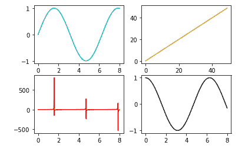

Matplotlib subplots()函数
原文：https://www.studytonight.com/matplotlib/matplotlib-subplots-function
在本教程中，我们将介绍 Matplotlib 库中基于状态的界面 Pyplot 中的subplots()函数。
Matplotlib 中的subplots()函数充当实用程序包装器。该功能有助于创建支线剧情的通用布局，并且在一次调用中还包括包围图形对象。
这个功能的主要目的是创建一个带有一组支线剧情的人物。
matplotlib 支持的各种支线剧情有 2x1 垂直、 2x1 水平或 2x2 网格。
Matplotlib subplots()函数
使用该功能的基本语法如下:
matplotlib.pyplot.subplots(nrows, ncols, sharex, sharey, squeeze, subplot_kw, gridspec_kw, **fig_kw)
Matplotlib subplots()功能参数
让我们讨论一下这个函数使用的参数:
非政府组织，ncls
参数显示表示行数，参数显示表示表示子图网格的列数。
sharex，sharey
为了控制 x 轴(共享)或 y 轴(共享)之间的属性共享，使用这些参数。
挤压
该可选参数通常包含布尔值，默认值为真。
支线剧情 _kw
此参数用于指示带有关键字的 dict，这些关键字被传递给用于创建每个子批次的 add _ sub 批次调用。
电网规格 _kw
此参数用于指示带有传递给 GridSpec 构造器的关键字的 dict，该构造器用于创建放置子情节的网格。
Matplotlib subplots()函数返回值
这些函数返回的值如下:
图:此方法用于返回图布局。
斧:此法主要用于回斧。它可以是轴对象或轴对象的数组。
让我们借助几个例子来理解这个方法:
例 1:
通过下面给出的代码片段，我们将创建一个具有 2 行 2 列子场景的图形。
import matplotlib.pyplot as plt
import numpy as np
fig, ax = plt.subplots(2, 2)
x = np.linspace(0, 8, 1000)
ax[0, 0].plot(x, np.sin(x), 'c') #row=0, col=0
ax[1, 0].plot(x, np.tan(x), 'r') #row=1, col=0
ax[0, 1].plot(range(50), 'y') #row=0, col=1
ax[1, 1].plot(x, np.cos(x), 'k') #row=1, col=1
fig.show()
上述代码的输出如下:

让我们用一个真实的例子来更详细地理解这个函数。
示例 2
让我们理解下面给出的实时示例的代码，其中我们已经绘制了两个子图。
总结:
如果要在一个图中创建多个子图来显示一个数据的不同方面，那么应该使用subplots()功能。